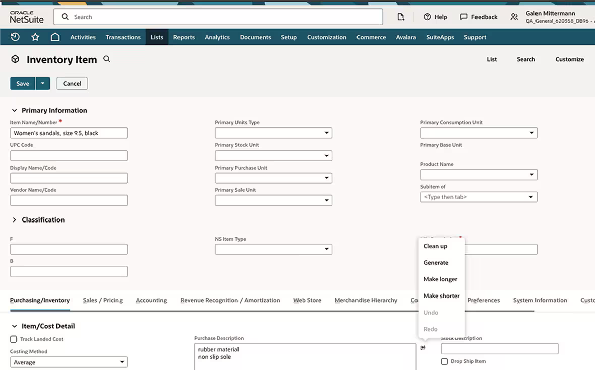
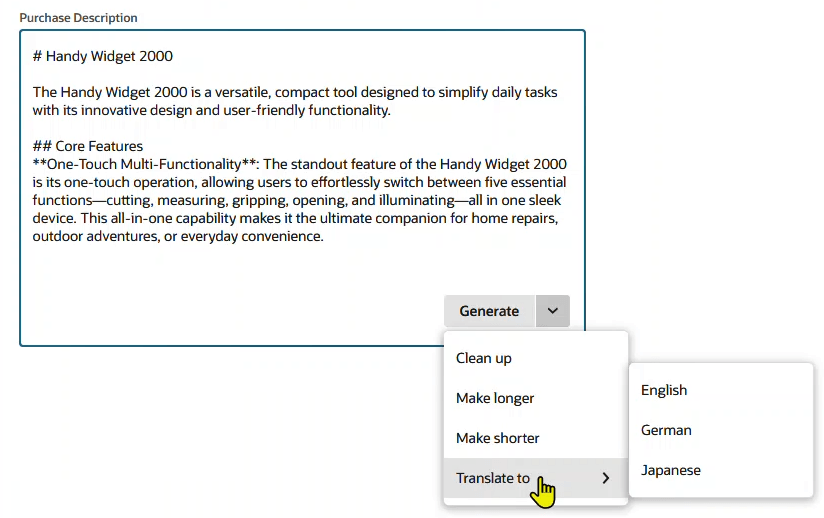

Why designing it twice is the story
NetSuite runs two product streams: the established product used by tens of thousands of businesses today, and NetSuite Next — a ground-up revamp of the design system, navigation, and underlying structure, built AI-ready. I designed Text Enhance for both, and the contrast between the two rounds is what makes this project worth reading.
Round one: ship AI inside a legacy product
The brief was to add Text Enhance to the existing NetSuite using only existing components — no new patterns, no platform changes. The real design work wasn’t drawing screens; it was deciding where AI belongs in a dense enterprise form. We attached the entry point to the field level, not as a global feature, so assistance appears exactly where writing happens — within the constraints the old UI allowed.

Round one, in the legacy product: assistance attached to the field, but the entry point is a small icon and the flat menu mixes generation actions with Undo and Redo — everything the redesign would later fix.
Round two: redesign it from data
With the constraint lifted for NetSuite Next, I didn’t start from the old design — I started from evidence.
- Read the data. I pulled usage telemetry: which fields and which record types actually used Text Enhance. The answer was concentrated — customer-support emails, item descriptions, and notes dominated. That told us who the real users were and killed several hypothetical use cases before they cost us design effort. The action telemetry also showed which AI actions people actually used, so the menu earned its structure from behavior, not guesswork.
- Propose against the old design’s weaknesses. In the legacy version, AI actions hid behind a small icon and mixed generation actions with Undo and Redo in one flat menu. The proposal made the primary action visible — a Generate button sitting on the field itself, with hint text and a character budget — and reorganized the action set around observed intent — Clean up leading (it dominated the telemetry), Make longer, Make shorter, and a new Translate submenu — with Undo and Redo separated from generation actions at last. The trade-off we debated: a visible button on every eligible field risks clutter in an already dense UI; hiding it risks the discoverability failure we’d already measured. We chose visibility on high-usage field types, grounded in the telemetry from step one.
- Define it as a system, not a screen. The final step was writing the design-system definition: component usage and types, interaction spec, responsive behavior, and accessibility notes — so any team adding AI writing assistance anywhere in NetSuite Next inherits the same behavior without asking me.
The telemetry behind step one, recreated with relative proportions — exact figures are confidential. Support messages dominate the fields; Clean up dominates the actions.
The multi-language moment
Working from Singapore on a global product, I pushed Text Enhance beyond English: I designed the Translate action and co-created the multi-language Text Enhance prototype that was demoed in a SuiteWorld 2024 keynote — AI writing assistance that meets international users in their own language.

Round two, in NetSuite Next: the Generate button lives visibly on the field, and the menu is generation-only — Clean up, Make longer, Make shorter, and Translate to English, German, or Japanese.
Outcome
- Shipped to general availability — now an official NetSuite AI product — and iterated on customer feedback.
- Multi-language prototype demoed in a SuiteWorld 2024 keynote.
- Full component definition adopted into the NetSuite Next design system — usage, types, interaction, responsive, accessibility.
What I learned
Telemetry is a designer’s best negotiating tool: every debate about visibility, placement, or scope got shorter once we could point at what users actually did. And constraints are clarifying — the legacy round taught us exactly what the redesign had to fix, which is a research method in itself.